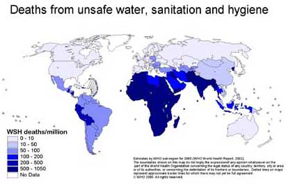
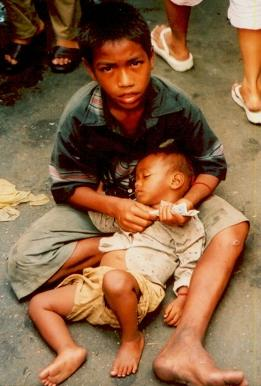

Cambodia does not lack water but when it comes clean drinking water, it is a different story. This lack of access is especially problematic in rural areas; this is an issue because 80% of the population lives in rural areas. Even though most people live in the countryside, wealthy urban areas have 22 times more access to clean water than them. As a result, 1 in 4, meaning 4 million out of the 16 million Cambodians, do not have access to clean drinking water. 6 million Cambodians lack access to improved sanitation.

Deaths from unsafe water per million per year
Dirty water from a factory
The main cause of water pollution is industry. Factories, especially those that produce textiles, dump tons of toxic sludge into waterways everyday. Moreover, Cambodia does not have enough resources to implement permanent, large-scale change. As a result, people who live in the rural areas are often left out of policy-making, not just from lack of representation, but also because of lack of resources. Because the textile industry is so important to its economy, Cambodians cannot give it up, even if it means polluting their clean water supply.
Clean water is vital for survival and unfortunately Cambodia does not have enough of it; the effects are profound. For the 80% of the population living in rural areas, agriculture is the industry. Because the water is polluted, crops cannot be grown successfully and farms become polluted as well. Moreover, life revolves around the rivers; people need it to water their crops, do laundry, bathe, etc. When the water becomes polluted, their livelihoods are threatened as well. In Cambodia, disease caused by lack of clean water accounts for one-fifth of deaths of children aged five and younger. Furthermore, 40% of primary schools do not have access to water and 35% of health centers do not either. It is clear that polluted water affects all aspects of life.

Many children become sick due to the lack of access to clean water
P&G's Children's Safe Drinking Water Program
In 2004, Procter & Gamble created the non-for-profit P&G Children's Safe Drinking Water Program to raise awareness of the global clean drinking water crisis and to help address it by providing P&G water purification packets. This is just one of the many organizations that have started addressing Cambodia's water crisis. Many of them provide things like water filtration, water purification devices, and resources for education. Here are some of these organizations: water.org, Unicef, and WaterAid.
Take a look at this issue using virtual reality
Instructions: use a QR code scanner to scan this image. Then place your phone into the VR glasses. Do not use if prone to headaches.
Description:
Fishing villages have been heavily impacted by water pollution.
https://water.org/our-impact/cambodia/
https://www.unicef.org/cambodia/8.WASH.pdf
http://apneaap.org/
https://www.wateraid.org/us/where-we-work/cambodia
https://goo.gl/Pzo4Gx
https://goo.gl/yH31nB
https://journeytoasmilingheart.wordpress.com/
https://goo.gl/fsFsbP
http://www.dwa.gov.za/Dir_WS/DWQR/subscr/ViewComDoc.asp?Docid=494
https://goo.gl/NVvjkn
http://whacinc.com/home.html